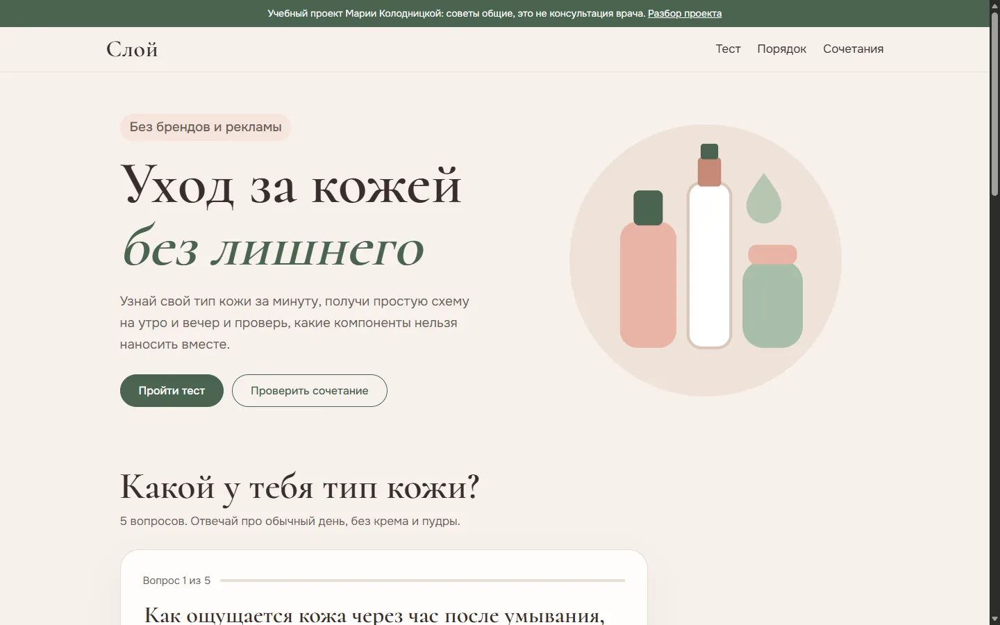
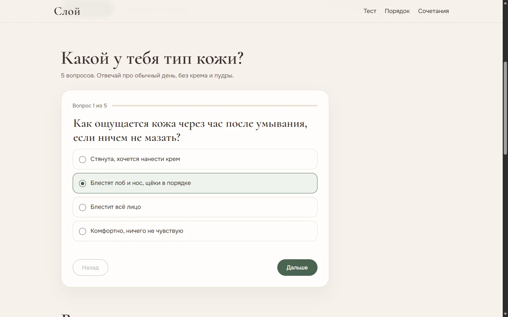
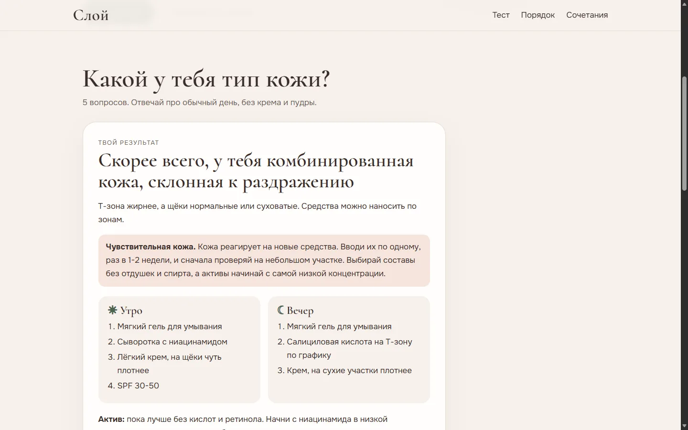
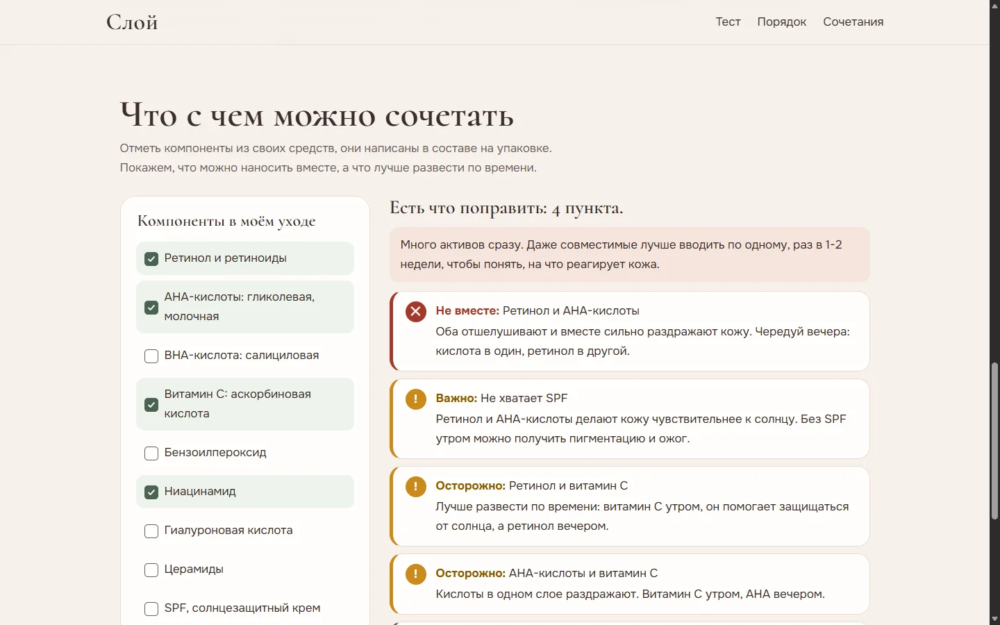
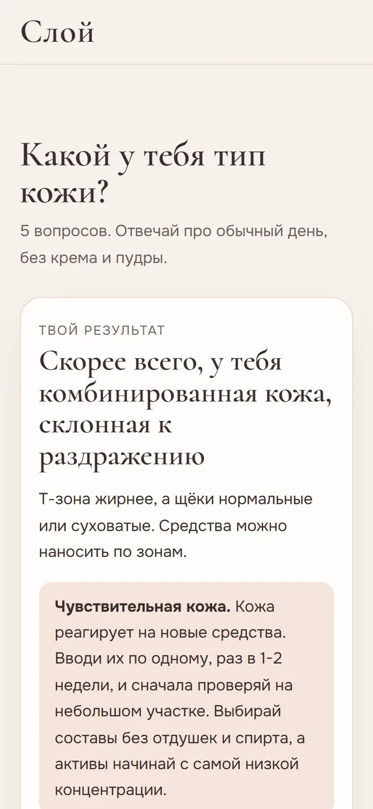

мини-сайт · учебный проект
Слой (уход за кожей)
Задача
Помочь человеку без знаний косметологии собрать простой уход и не навредить себе сочетанием активных компонентов.
Для кого
Те, кто стоит у полки с десятком баночек и не понимает, что из этого нужно. Им важно коротко и без давления купить ещё.

Решения и почему
Тест
- По одному вопросу на экран, с шагом "Вопрос 2 из 5" и кнопкой "Назад", которая помнит ответ
- Пропустить вопрос нельзя, но ошибка мягкая и подсказывает, как выбрать
- Результат без категоричности: "скорее всего" и напоминание, что точно скажет дерматолог
- Если кожа реагирует на новые средства, совет меняется: без кислот и ретинола, вводить по одному
- Результат сохраняется, чтобы не проходить тест заново
Сочетания
- Статус передан тремя способами: значок, слово и цвет. Только цветом нельзя, его различают не все
- Сначала то, что нельзя, потом осторожно, потом хорошие пары
- Отдельно предупреждает, если с ретинолом или кислотами нет SPF
- Советует вводить активы по одному, если их отмечено три и больше
- Компоненты названы так, как в составе на упаковке





Как проверяла
| № | Что проверяю | Действие | Ожидаю | Получила | Итог |
|---|---|---|---|---|---|
| 1 | Без ответа | Нажать "Дальше" | Ошибка и фокус на вариантах | так и есть | пройдено |
| 2 | Ошибка исчезает | Выбрать вариант | Ошибка пропала | так и есть | пройдено |
| 3 | Назад | Вернуться к первому вопросу | Ответ сохранён | отмечен второй вариант | пройдено |
| 4 | Последний вопрос | Дойти до пятого | Кнопка "Узнать результат" | так и есть | пройдено |
| 5 | Комбинированная | Ответы про Т-зону, "иногда" реагирует | Комбинированная, склонная к раздражению | так и есть, фокус на заголовке результата | пройдено |
| 6 | Сухая | Первые варианты во всех вопросах | Сухая, склонная к раздражению | так и есть | пройдено |
| 7 | Нормальная | Комфортно, почти как утром, не реагирует | Нормальная | так и есть | пройдено |
| 8 | Жирная | Блестит всё лицо, не реагирует | Жирная | так и есть | пройдено |
| 9 | Сохранение | Перезагрузить страницу | Сразу результат | так и есть | пройдено |
| 10 | Один компонент | Отметить ретинол | Попросить отметить ещё | "Отметь ещё хотя бы один компонент" | пройдено |
| 11 | Ретинол и AHA | Отметить оба | "Не вместе" и нет SPF | "Не вместе" и "Важно: не хватает SPF" | пройдено |
| 12 | Много активов | Ретинол, AHA, витамин C, ниацинамид | Совет вводить по одному | "Есть что поправить: 4 пункта" и совет | пройдено |
| 13 | Без конфликтов | Гиалуроновая кислота и церамиды | Конфликтов нет | "Конфликтов нет, можно пользоваться" | пройдено |
Что нашла и исправила
- "Ретинол и ретиноиды и AHA-кислоты". В парах повторялось "и", потому что брались полные названия из списка. Теперь в парах короткие: "Ретинол и AHA-кислоты".
- "Не вместе: Не хватает SPF". Предупреждение про SPF получило статус несовместимой пары. Сделала для него отдельный статус "Важно".
- "Витамин C и Ниацинамид". Заглавная буква посреди фразы, теперь "Витамин C и ниацинамид".
axe не находит нарушений WCAG 2.1 A и AA на вопросе, результате и в проверке сочетаний.
Правила совместимости собраны из общих рекомендаций дерматологов. На настоящем проекте тексты проверил бы специалист, и на сайте был бы указан автор.

